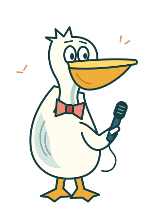

A little fine-tuning.
Made with your agent. Shaped by you.
Agent not connected

Your cast is ready for notes.
Open the project JSON your agent sent you. Move a character, tighten a pause, or rewrite a line. Your connected server can update voices and render your next video.
Make a skit with your agentWorks in your browser. No model keys or speech setup.
Drag a character to change its opening position. Play to see movement and camera shots.
Scene
Paste into your agent chat with your latest exported project.